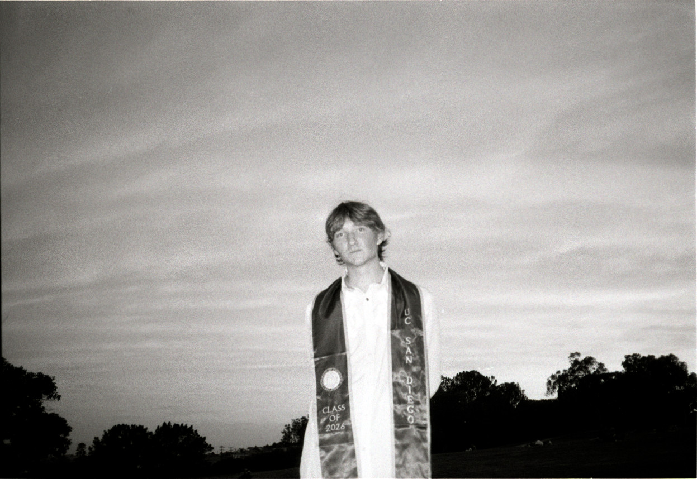
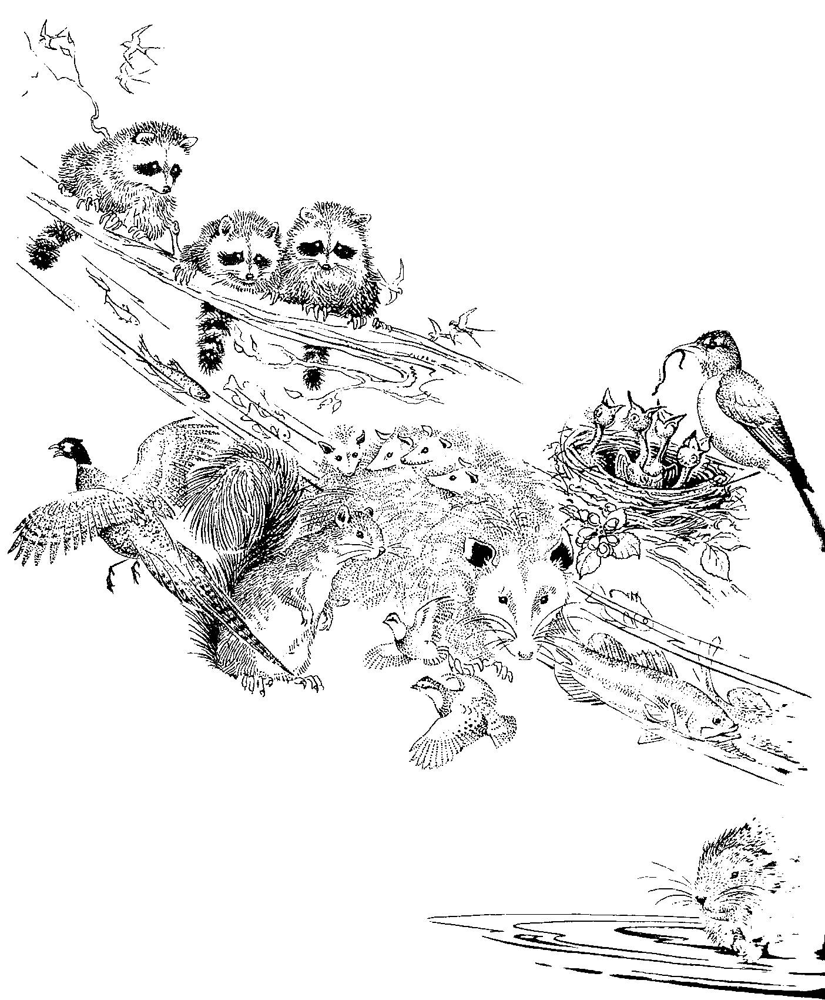

Zach Lawrence
PhD student, Computer Science
University of Wisconsin–Madison

About
I'm a first-year PhD student studying Computer Science at the University of Wisconsin–Madison, with interest in machine learning for scientific computing, surrogate modeling, time series analysis, and machine learning theory. I am advised by Prof. Misha Khodak. I am currently working on optimization and learning techniques for PDE preconditioning, and active learning for high-fidelity fusion surrogates.
I completed my B.S. in Computer Science at UC San Diego in 2026, with minors in Physics and Mathematics. As an undergraduate I was very lucky to be advised by Prof. Rose Yu and Prof. Ryan Kastner. During my time as an undergraduate, I worked on Simulcost (ICML 2026), an open source cost-aware tool-kit and benchmark for parameterizing simulators across solid mechanics, fluid mechanics, and plasma physics using LLMs. I also worked on forecasting wind power generation and optimizing wind power dispatch using supervised and unsupervised training, respectively, with neural quantile heads paired with LSTM-based RNNs (ICDM Workshops 2025). I was a member of Engineers for Exploration from April 2023 to June 2026, during which I acted as a project lead for the Mangrove Monitoring and Acoustic Identification teams. For the former, I led a team of undergraduate developers in building a web platform that maps mangroves in aerial imagery using a semantic segmentation model in collaboration with Scripps Institute ecologists. For the latter, I designed and trained a lightweight CNN for bird-call classification, and profiled post-training quantization schemes for deployment on an embedded system.
You can read more about my work on the publications page and in my CV.
Teaching
- CS 400: Programming III — Teaching Assistant, Fall 2026